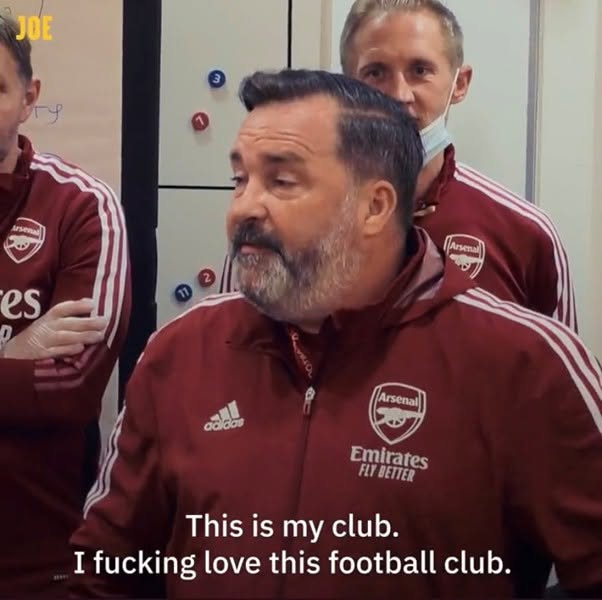

01It is hope that kills us.
Chính thứ hy vọng đó là thứ đã giết chúng ta biết bao lần. Nhưng cũng chính nó là lý do chúng ta vẫn ở đây.
Kho bài viết
Các bài viết sẽ được sắp theo thời gian và theo mạch cảm xúc, để người đọc có thể bắt đầu từ một cái tên rồi đi tiếp qua cả một giai đoạn.

01Chính thứ hy vọng đó là thứ đã giết chúng ta biết bao lần. Nhưng cũng chính nó là lý do chúng ta vẫn ở đây.